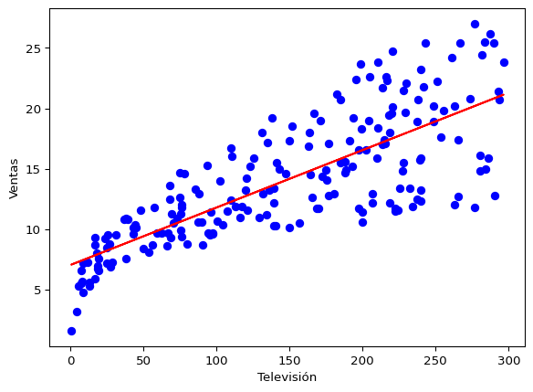
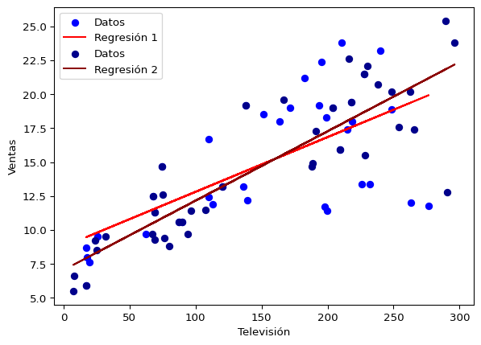

import numpy as np
import pandas as pd
import matplotlib.pyplot as pltIntroducción al Aprendizaje Automático con Regresión Lineal
¿Qué es el Aprendizaje Automático?
Esta disciplina existe en la intersección entre la estadística y la informática. Por lo tanto hay un par de maneras de verlo.
Un informático definiría el aprendizaje automático por contraste con la programación clásica. En programación clásica uno le dice al computador qué hacer paso a paso. En aprendizaje automático uno en cambio define un modelo y este aprende o se ajusta a los datos para dar el resultado esperado. Un ejemplo trivial sería convertir entre grados centígrados y fahrenheit: En programación usual uno le pide al computador calcular con la fórmula de conversión. En aprendizaje automático uno tiene muchas parejas de temperaturas en ambas esalas y ajusta un modelo por ejemplo con regresión lineal. En ese sentido decimos que el modelo aprende de los datos.
Un estadístico diría que el aprendizaje automático es una serie de nuevos modelos para trabajar con una cantidad grande de datos y/o parámetros libres. El desarrollo de estos algoritmos fue posible gracias al progreso del hardware de las últimas décadas.
En muchas situacines tenemos una serie de variables que medimos sobre un sistema, las llamamos \(X_1, ..., X_n\), y nos interesa alguna otra variable que depende de ellas \(Y = f(X) + \epsilon\). El \(\epsilon\) es un ruido que representa lo que está fuera de nuestro control y capacidad para medir. Puede ser error experimental en las mediciones, o el efecto de otras variables que no estamos tomando en cuenta.
Un ejemplo de un tal problema es el siguiente: Trabajamos para una empresa que vende un producto dado. Esta empresa invierte su presupuesto de publicidad en radio, televisión y periódicos. Tenemos el número de unidades medidas en varios mercados así como la inversión en estos tres tipos de publicidad. De esta forma \(X_1, X_2, X_3\) es la inversión en televisión, radio y periódicos respectivamente, mientras \(Y\) es la cantidad de unidades medidas.
Predicción vs inferencia
En este caso podemos querer determinar \(f\) por dos motivos: Predicción o inferencia.
Para predicción, nos importa solamente determinar cuánto vale \(Y\) para alguna combinación de las variables de entrada que no hemos visto antes. Por ejemplo saber cuántas unidades se venderán para una dada inversión en publicidad. La mayor parte del aprendizaje automático se ocupa de este tipo de problemas. Lo más importante en este tipo de problemas es reducir el error \[ \langle (\hat{Y} - Y)^2\rangle = \langle(\hat{f}(X) - f(X) + \epsilon)^2 \rangle = \langle(f(X) - \hat{f}(X))^2\rangle + \operatorname{Var}(\epsilon)\,. \] Al primer término lo llamamos el error reducible: Podemos esperar disminuirlo encontrlando un modelo mejor. Al segundo término lo llamamos el error irreducible.
Para la inferencia, nos interesa saber la forma de \(f\) para responder preguntas cualitativas sobre el fenómeno como por ejemplo: ¿Cuáles variables tienen un efecto importante? ¿Cuál es la incertidumbre de una predicción dada?
En física normalmente nos interesa la inferencia. Predecir no es suficiente dado que el propósito de la física es entender los sistemas que estudia. Además nos interesa tener alguna medida de la incertidumbre de nuestras predicciones y modelos. Algunos estadísticos le llaman aprendizaje estadístico al estudio de este tipo de pregutnas, en contraste con el aprendizaje automático que se preocupa sólo de obtener predicciones de la manera más eficiente posible.
Modelos paramétricos vs no paramétricos
En nuestra discusión anterior hemos tomado en cuenta modelos que dependen de parámetros. En física esto ocurre con mucha frecuencia ya que tenemos leyes físicas que queremos comparar con el experimento. Esas leyes nos proveen el modelo de forma natural junto con sus parámetros libres.
En general, los modelos que dependen de parámetros pueden dar origen a métodos muy potentes cuando son una buena descripción de los datos. Por ejemplo el ajuste lineal que vimos antes y que discutiremos más abajo puede ser un método muy potente si la relación entre los \(X_i\) y \(Y\) es lineal.
Los modelos paraétricos suelen ser más interpretables y más fáciles de usar para hacer inferencia.
Sin embargo hay casos donde no sabemos cuál es el modelo subyacente. Aún así nos puede interesar hacer predicciones. Un ejemplo que surge en física es cuando algún detalle del detector tiene un efecto sobre la medida, pero no nos interesa o es demasiado complicado modelarlo. Entonces tratamos de aproximar el efecto con funciones muy generales que no tengan parámetros libres.
La ventaja de estos modelos es que para la predicción son más generales que los paramétricos. No necesitamos conocer el sistema para tratar de ajustar uno de estos modelos, y nos puede permitir predecir en situaciones complejas. Por otro lado, suelen ser menos interpretables. Son menos potentes que conocer el modelo subyacente de los datos. Mientras más sabemos sobre un sistema a priori, mejores los métodos que podemos aplicar.
Aprendizaje supervisado vs no supervisado
Normalmente los datos toman la forma de una enorme lista de mediciones de las diferentes variables de entrada. Si tenemos \(q\) variables de entrada y \(n\) mediciones, podemos organizarlas en una matriz donde cada columna corresponde a una variable medida y cada fila es una medición. Es decir \(\boldsymbol{X}\) es una matriz \(n\times q\). En algunos casos también tenemos las variables de salida \(Y\) que organizamos como un vector \(y_i\) con \(n\) componentes. Si usamos esas variables de salida para entrenar el modelo hablamos de aprendizaje supervisado. La analogía es que el modelo mira varios ejemplos para aprender.
En otras situaciones no tenemos una variable de salida \(y_i\). Por ejemplo si tenemos una aplicación que recomienda restaurantes, nos puede interesar saber cuáles son los gustos de las personas. Podemos entonces agruparlos por gusto, donde los miembros de cada grupo tienen gustos similares. En casos como este decimos que el aprendizaje es no supervisado.
También hay mezclas entre ambos. Un ejemplo es reconocer imágenes de células con una cierta característica. Tenemos muchas imágenes pero alguien tiene que etiquetarlas con esa característica a mano. En ese caso podemos etiquetar algunas pocas e intentar entrenar un modelo que mezcle ambos tipos de algoritmos. Esto se llama aprendizaje semi supervisado.
Regresión contra clasificación
En problemas de regresión las variables de salida son numeros reales. Por ejemplo la masa de una partícula o la densidad del universo.
En problemas de clasificación las variables de salida son categorías. Por ejemplo si un evento en un detector es una señal o un ruido instrumental.
Regresión Lineal
Ilustraremos varios de los conceptos anteriores mediante la sencilla regresión lineal. Este tipo de regresión es muy sencilla, pero es computacionalmente barata y muy fácil de interpretar. Por ese motivo fue muy usada antes de la llegada de computadores suficientemente potentes. Nosotros lo estudiamos aquí porque es fácil y nos permite introducir varios conceptos sin el bagaje adicional de un modelo complicado.
Nos ocuparemos de el siguiente ejemplo: Una compañía quiere saber cómo invertir el dinero de publicidad. Tenemos los datos de gasto publicitario en televisión, radio y periódicos para varios mercados junto con el número de unidades vendidas en cada uno.
Importamos los datos
datos_publicidad = pd.read_csv("data/Advertising.csv", index_col=0)
datos_publicidad.describe()| TV | Radio | Newspaper | Sales | |
|---|---|---|---|---|
| count | 200.000000 | 200.000000 | 200.000000 | 200.000000 |
| mean | 147.042500 | 23.264000 | 30.554000 | 14.022500 |
| std | 85.854236 | 14.846809 | 21.778621 | 5.217457 |
| min | 0.700000 | 0.000000 | 0.300000 | 1.600000 |
| 25% | 74.375000 | 9.975000 | 12.750000 | 10.375000 |
| 50% | 149.750000 | 22.900000 | 25.750000 | 12.900000 |
| 75% | 218.825000 | 36.525000 | 45.100000 | 17.400000 |
| max | 296.400000 | 49.600000 | 114.000000 | 27.000000 |
Regresión lineal simple
Primero reducimos el problema a predecir el número de ventas basados en el gasto en televisión. Por lo tanto nuestro modelo es \[ f(X) = \beta_0 + \beta_1 X\,, \] donde \(\beta_1\) es el gasto en televisión. Ya vimos cómo estimar los coeficientes minimizando la suma de errores al cuadrado. Esto ya hace parte de muchas librerías en python.
from sklearn.linear_model import LinearRegression
# Datos
X = datos_publicidad[["TV"]]
Y = datos_publicidad["Sales"]
# Crear y ajustar el modelo
model = LinearRegression()
model.fit(X, Y)
# Predecir
y_pred = model.predict(X)
# Graficar
plt.scatter(X, Y, color='blue', label='Datos')
plt.plot(X, y_pred, color='red', label='Regresión')
plt.xlabel("Televisión")
plt.ylabel("Ventas")Text(0, 0.5, 'Ventas')
Determinando la precisión de los coeficientes
Al escribir el modelo nosotros estimamos los coeficientes. Como se calcularon a partir de los datos, tendrán una varianza. Para verlo repetimos el código de arriba pero usando un subconjunto de los datos.
datos_subconjunto_1 = datos_publicidad.sample(frac=0.2)
datos_subconjunto_2 = datos_publicidad.sample(frac=0.2)
# Datos
X_1 = datos_subconjunto_1[["TV"]]
Y_1 = datos_subconjunto_1["Sales"]
X_2 = datos_subconjunto_2[["TV"]]
Y_2 = datos_subconjunto_2["Sales"]
# Crear y ajustar el modelo
model_1 = LinearRegression()
model_1.fit(X_1, Y_1)
model_2 = LinearRegression()
model_2.fit(X_2, Y_2)
# Predecir
y_pred_1 = model_1.predict(X_1)
y_pred_2 = model_2.predict(X_2)
# Graficar
plt.scatter(X_1, Y_1, color='blue', label='Datos')
plt.plot(X_1, y_pred_1, color='red', label='Regresión 1')
plt.scatter(X_2, Y_2, color='darkblue', label='Datos')
plt.plot(X_2, y_pred_2, color='darkred', label='Regresión 2')
plt.legend()
plt.xlabel("Televisión")
plt.ylabel("Ventas")Text(0, 0.5, 'Ventas')
Vemos que las líneas cambian dependiendo de los datos. Esto nos muestra que estas estimaciones tienen una varianza que ya habíamos calculado \[ \operatorname{Var}(\hat{\beta}_1) = \frac{\sigma^2}{\sum(x_i - x)^2}\,,\quad \operatorname{Var}(\hat{\beta}_0) = \frac{\sigma^2}{n} + \operatorname{Var}(\hat{\beta}_1) \bar{x}^2\,. \] En general no concemos \(\sigma^2\), que es la varianza de \(Y\). Lo tenemos que estimar de los datos. Para hacerlo tomamos \(s^2 = \sum(y_i - \bar{y})^2/(n-2)\). Es \((n-2)\) en vez de \((n-1)\) en el denominador porque en este modelo tenemos dos parámetros.
Evaluar la precisión de un modelo
Una manera de evaluar lo bueno o malo que es el ajuste es por medio de la estadística \(\chi^2\) que vimos antes.
Otra forma muy usada y fácil de interpretar es la suma de errores residuales. Se define como \[ \text{RSE} = \sqrt{\frac{1}{n - 2} \text{RSS}}\,, \] donde \(\text{RSS} \equiv \sum(y_i - \hat{y}_i)^2\). Esto nos dice en promedio cuánto se desvía el modelo de las mediciones. Saber si el errror es suficientemente bueno depende de lo que estemos dispuestos a tolerar.
Otra evaluacón que muy usada que no depende del modelo es la \(R^2\). Definida así \[ R^2 = 1 - \frac{\text{RSS}}{\sum (y_i - \bar{y})^2}\,. \] El denominador del segundo término se llama la suma total de cuadrados. Nos dice la varianza de \(y\) en los datos. El numerador nos dice la desviación de los datos respecto al modelo. Si \(R^2\) es cercano a \(1\) quiere decir que la desviación de los daotos respecto al modelo es muy pequeña comparada con la desviación total y el modelo es bueno. Si al contrario \(R^2\) es cercano a cero, quiere decir que la desviación respecto al modelo es similar a la desviación total tal que el modelo no está haciendo nada (podemos lograr algo similar usando la media). A veces se dice que \(R^2\) es la “fracción de la varianza explicada por el modelo”. Para la regresión lineal simple, $R^2% es igual a la correlación entre el modelo y los datos.
Regresión Lineal Múltiple
Ahora queremos ajustar un modelo que depende de varias variables de entrada. En nuestro caso son los presupuestos para los diferentes tipos de publicidad. \[ f(\vec{X}) = \beta_0 + \beta_1 X_1 + ... + \beta_q X_q\,. \] El ajuste de mínimos cuadrados se logra por medio de la ecuación normal como antes. Para tener más control sobre las propiedades estadísticas usamos otra librería de python.
import statsmodels.api as sm
X = datos_publicidad.drop("Sales", axis=1)
X = sm.add_constant(X)
# Ajustar el modelo
model = sm.OLS(Y, X)
results = model.fit()
print(results.summary()) OLS Regression Results
==============================================================================
Dep. Variable: Sales R-squared: 0.897
Model: OLS Adj. R-squared: 0.896
Method: Least Squares F-statistic: 570.3
Date: Mon, 29 Dec 2025 Prob (F-statistic): 1.58e-96
Time: 12:48:04 Log-Likelihood: -386.18
No. Observations: 200 AIC: 780.4
Df Residuals: 196 BIC: 793.6
Df Model: 3
Covariance Type: nonrobust
==============================================================================
coef std err t P>|t| [0.025 0.975]
------------------------------------------------------------------------------
const 2.9389 0.312 9.422 0.000 2.324 3.554
TV 0.0458 0.001 32.809 0.000 0.043 0.049
Radio 0.1885 0.009 21.893 0.000 0.172 0.206
Newspaper -0.0010 0.006 -0.177 0.860 -0.013 0.011
==============================================================================
Omnibus: 60.414 Durbin-Watson: 2.084
Prob(Omnibus): 0.000 Jarque-Bera (JB): 151.241
Skew: -1.327 Prob(JB): 1.44e-33
Kurtosis: 6.332 Cond. No. 454.
==============================================================================
Notes:
[1] Standard Errors assume that the covariance matrix of the errors is correctly specified.Esta librería nos da un el error estándar sobre cada parámetro. Esto nos permite calcular intervalos de confianza.
Además nos presenta con una estadística \(t\) que viene de comparar la hipótesis nula de que ese parámetro no afecta los datos con la hipótesis que sí los afecta. En este caso corresponde a \(t = \hat{\beta}_i/\operatorname{SE}(\hat{\beta}_i)\). Sabemos que esta está distribuida según la distribución de Student para grandes números de datos. De aquí podemos obtener la probabilidad de obtener un \(t\) así o más extremo, es decir un valor \(p\) que también nos lo da esta librería.
Con esto bajo la manga podemos preguntarnos
¿Cuáles variables son importantes?
Estudiaremos más adelante varias maneras de seleccionar variables. Por ahora sólo diremos que si tenemos \(p\) coeficientes, tenemos \(2^p\) posibles modelos. Estos son demasiados para compararlos a todos. Por lo tanto se usan algunas estrategias aproximadas:
Empezamos por todos los modelos con un parámetro. Escogemos el mejor de esos, luego le agregamos los parámetros restantes uno a uno para quedarnos con el mejor. Seguimos así hasta que satisfacemos algún criterio. Por ejemplo que el valor \(p\) de todo el modelo esté por debajo de un cierto valor.
Al revés, del modelo completo quitamos parámetros uno a uno. Nos quedamos con el mejor y le quitamos a ese los parámetros uno a uno. Paramos cuando todos los parámetros tengan un valor \(p\) por debajo de un cierto valor.
En nuestro ejemplo es bastante claro que podemos remover el coeficiente de periódicos.
Una vez tengamos un buen modelo podemos hacer predicciones. A partir de las varianzas de los parámetros podemos reportar un intervalo de confianza a un nivel \(C\) para la prediccón (propagando errores). Según este modelo, el verdadero valor de \(f(X)\) estará en ese intervalo una fracción \(C\) de veces. *Esto no quiere decir que al realizar muchas observaciones futuras, una fracción \(C\) caerá en ese intervalo. Esto es porque nos falta \(\epsilon\), el error irreducible (recuerde que cada observación es \(f(X) + \epsilon\)). A los intervalos que incorporan este error irreducible (estimado a partir de los datos) se los llama intervalos de predicción.
Términos No-Lineales en Regresión Lineal
Cuando la relación entre variables es no-lineal, al parecer no podemos aplicar este método. En realidad podemos generalizarlo. Por ejemplo podríamos escribir para un solo predictor \[ f(X) = \beta_0 + \beta_1 X + \beta_2 X^2\,. \] Más interesante aún, en el caso de varios predictores podemos incluir términos de interacción. En nuestro ejemplo podemos escribir \[ f(X) = \beta_0 + \beta_{\text{TV}}X_{\text{TV}} + \beta_{\text{radio}}X_{\text{radio}} + \beta_{\text{TV}\times\text{radio}}X_{\text{TV}}X_{\text{radio}}\,. \] Lo que representa este término es que hay un efecto de sinergia entre los dos predictores. El efecto de invertir en televisión depende de si se invierte en radio o no. Veámoslo
import statsmodels.api as sm
X = datos_publicidad.drop(["Sales", "Newspaper"], axis=1)
X["Interaction"] = X["TV"]*X["Radio"]
X = sm.add_constant(X)
# Ajustar el modelo
model = sm.OLS(Y, X)
results = model.fit()
print(results.summary()) OLS Regression Results
==============================================================================
Dep. Variable: Sales R-squared: 0.968
Model: OLS Adj. R-squared: 0.967
Method: Least Squares F-statistic: 1963.
Date: Mon, 29 Dec 2025 Prob (F-statistic): 6.68e-146
Time: 12:48:04 Log-Likelihood: -270.14
No. Observations: 200 AIC: 548.3
Df Residuals: 196 BIC: 561.5
Df Model: 3
Covariance Type: nonrobust
===============================================================================
coef std err t P>|t| [0.025 0.975]
-------------------------------------------------------------------------------
const 6.7502 0.248 27.233 0.000 6.261 7.239
TV 0.0191 0.002 12.699 0.000 0.016 0.022
Radio 0.0289 0.009 3.241 0.001 0.011 0.046
Interaction 0.0011 5.24e-05 20.727 0.000 0.001 0.001
==============================================================================
Omnibus: 128.132 Durbin-Watson: 2.224
Prob(Omnibus): 0.000 Jarque-Bera (JB): 1183.719
Skew: -2.323 Prob(JB): 9.09e-258
Kurtosis: 13.975 Cond. No. 1.80e+04
==============================================================================
Notes:
[1] Standard Errors assume that the covariance matrix of the errors is correctly specified.
[2] The condition number is large, 1.8e+04. This might indicate that there are
strong multicollinearity or other numerical problems.Vemos que el ajuste mejora el \(R^2\). Note que el valor \(p\) de radio bajó un poco. Esto es porque la interacción era parte de su efecto. En general, si queremos incluir los términos de interacción, debemos incluir cada uno de sus componentes separadamente para evitar confusiones entre la interacción y la simple variable.
Problemas con la regresión lineal
Algunas situaciones que pueden ser problemáticas para la regresión lineal que hemos presentado.
Correlación entre errores: Si los errores \(\epsilon_i\) no son independientes no es suficiente minimizar los cuadrados. Debemos minimizar una suma que incluya la covarianza enre mediciones. En general esto reduce los valores \(p\). Un ejemplo extremo es si la correlación es perfecta. Al realizar la misma medición muchas veces obtenemos el mismo valor, en realidad hemos hecho una sola medida.
Varianza no constante (heterosedasticidad): Cuando la varianza es diferente para cada medición, de nuevo podeos resolverlo minimizando una suma de cuadrados que incluya la varianza de cada término. Esto si podemos modelarla o estimarla de alguna manera.
“Outliers”: Si hay puntos atípicos en las mediciones, estos pueden ser errores de registro de los datos o errores sistemáticos aislados. Al estar muy porfuera de la “nube” de puntos usuales pueden modificar el ajuste y contribuir mucho al error total (no estarán descritos por el modelo de los demás puntos). Cuando se detecta un punto fuera de lo normal, con un \(t\) muy grande, es necesario examinarlo detenidamente para saber si es un dato genuino o un error.
Puntos con gran palanca: Los puntos en los extremos del intervalo tienden a afectar la regresión lineal más que puntos cerca del centro. Un error en esos puntos afecta desmesuradamente el ajuste.
Colinearidad: Cuando dos variables están muy correlacionadas, esto puede inducir problemas a la hora de hacer inferencia con el modelo. Por ejemplo, el ajuste particular puede diluir el valor \(p\) de ambas variables, porque puede compensar con una de ellas lo que hace la otra. Para facilitar la interpretación se puede intentar remover una de esas variables y ver cómo cambian las conclusiones.
Ejercicios para la prueba
2.1, 3.1, 3.3, 3.4, 3.6